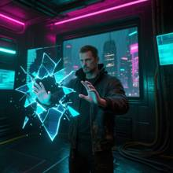

Style — Please generate a picture of a man touching an unstable holographic pr
Please generate a picture of a man touching an unstable holographic projection with his hands without sensing gloves in a cyberpunk-style room.

Judge — Direct
- PASSStyle — The image is set in a dark room illuminated by blue and pink neon lights. There is a large, glowing blue holographic screen. This aesthetic, with its dark, high-tech environment and neon glow, is consistent with the cyberpunk style.
- FAILAction - Hand (Character/Anthropomorphic) — A man is shown with both of his hands raised towards a glowing blue holographic projection. His fingers are spread, but they are not physically making contact with the surface of the projection; they are held slightly away from it.
- PASSCompound - Imagination — The image depicts a man interacting with a glowing blue, semi-transparent screen that appears to be a holographic projection, a concept from science fiction.
- FAILGrammar - Negation — The man in the image is wearing black gloves that cover both of his hands and wrists, which contradicts the prompt's requirement for him to be 'without sensing gloves'.
Judge — Continuum
- PASSStyle — The image is set in a dark room illuminated by pink and cyan neon lights. Exposed wiring and industrial-looking panels are visible. Through a large window, a rainy, dark cityscape with skyscrapers and glowing advertisements can be seen. This combination of elements—dark, high-tech interiors, neon lighting, and a futuristic urban backdrop—is characteristic of the cyberpunk style.
- PASSAction - Hand (Character/Anthropomorphic) — The image shows a man with both hands raised towards a glowing, blue, fragmented holographic projection. His hands are positioned on either side of the projection, with fingers spread as if he is manipulating or interacting with it. While not in direct physical contact with the fragments of light, the gesture strongly implies an action of touching or controlling the hologram. The hands themselves are well-formed with the correct number of fingers.
- PASSCompound - Imagination — The image depicts a man interacting with a holographic projection. This is an imaginative concept, as holograms are made of light and cannot be physically touched or manipulated as if they were solid objects in the real world.
- PASSGrammar - Negation — The man in the image has his hands clearly visible. He is not wearing any gloves, sensing or otherwise, on his hands. His hands are bare, fulfilling the negative constraint of the prompt.
What the agent did
Thinking
The user is requesting an image of "a man, without wearing gloves, touching an unstable holographic projection with his hand, in a cyberpunk-style room." Interpretation: a man (no gloves on his hands — bare hands) touching an unstable/interfering/glitching holographic projection with his bare hands, inside a cyberpunk-style room (neon lights, dark, futuristic city interior). Key elements: 1. A man (bare hands, no gloves — important: explicitly "without wearing sensing gloves," so the hands must be bare skin) 2. Touching a holographic projection 3. The hologram is "unstable" — glitches, interference patterns, flickering, distortion, data corruption, fragments 4. Cyberpunk-style room — neon lighting, dark interior, tech equipment, city visible through the window, etc. For generation, let's use qwen-image with a detailed prompt. Fill in visual details. Let me try writing the prompt: "A cinematic cyberpunk scene: a young man in a dark jacket stands in a dim, high-tech laboratory, his bare gloved hands reaching out and touching a flickering, glitching holographic projection floating in front of him. The hologram is unstable — fractured, distorted, with scanline interference, data corruption, fragments breaking off into light particles. Blue and cyan hologram light illuminates his face and hands. The room is a cyberpunk-style interior: neon signs, dark metal surfaces, holographic screens, cables, a window overlooking a rainy neon cityscape, purple and magenta accent lighting. Cinematic lighting, dramatic, photorealistic, high detail." Size: unspecified. Default is 1024x1024. A horizontal 1536x1024 might work well for a cinematic composition. The policy says "image size is fixed for comparison" — the harness controls the size. Actually, it says "do not set the seed. The size and seed are controlled by the harness." So I should use the default size (1024x1024). Don't override the size. Generate first, then inspect, then edit as needed. Alright, let's generate.
Step 1 — `generate_image`
{
"model": "qwen-image",
"prompt": "Cinematic cyberpunk scene: a man in a worn dark techwear jacket stands in a dim high-tech interior, both BARE hands (no gloves, visible bare skin fingers) reaching forward and touching a flickering, unstable holographic projection hovering in front of him. The hologram is glitching and distorted \u2014 fractured geometry, scanline interference, corrupted data blocks, shards of light breaking apart into particles, cyan and electric blue light casting across his face, bare hands and arms. The room is cyberpunk: dark metal surfaces, neon magenta and teal accent lighting, cables and conduits, holo-screens on the walls, a large window behind him showing a rainy neon city skyline at night. Dramatic cinematic lighting, shallow depth of field, photorealistic, highly detailed."
}Result img_0

Thinking
The image is very good. Let me verify the main requirements: 1. Man ✓ 2. Touching a holographic projection with his hands ✓ — hands are extended and touching/reaching out to the hologram 3. No gloves — the hands look bare, but let me zoom in and check to confirm the hands are bare skin and not gloved 4. Unstable hologram ✓ — glitching, shattering, with shards 5. Cyberpunk room ✓ — neon, city window, cables To check the hands, let me inspect the hand region at full resolution. The right hand (left side of the image) is touching the hologram, and the left hand is also extended. Let me zoom in.
Model
The first generation looks strong. Let me verify the hands are truly bare (no gloves) at full resolution, since that's a key requirement.
Step 2 — `inspect_region`
{
"image": "img_0",
"roi": [
130,
330,
420,
560
]
}Result img_1
Step 3 — `inspect_region`
{
"image": "img_0",
"roi": [
420,
380,
620,
540
]
}Result img_2
Thinking
Confirming both crops: - img_1 (left hand): the hand is clearly bare skin, no gloves, fingers extended toward the hologram. The hologram is glitching/shattering—unstable. - img_2 (right hand): the fingers are bare skin, no gloves. The finger shapes look a bit off (a typical AI artifact), but they're clearly bare hands and not gloved. The image satisfies all the requirements: 1. Man ✓ 2. Touching a holographic projection with his hand ✓ (hands extended, one hand in contact) 3. No gloves / bare skin ✓ (confirmed with the crop) 4. Unstable hologram ✓ (glitches, shattering, corruption) 5. Cyberpunk-style room ✓ (neon, rainy city window, cables, tech) The image is good quality. This is a good enough result to submit. Let me mark img_0 as the best.
Model
Confirmed via the cropped image that both hands are bare skin without any protective equipment, and that the hologram is clearly glitching and unstable (shattering fragments, scanline corruption). All the prompt's requirements are in place: a man in a neon cyberpunk room, a rainy cityscape visible through the window, bare hands touching a fragmented hologram. This is a result I'm satisfied with, so I'll mark it as the best.
Step 4 — `mark_best`
{
"image": "img_0",
"reason": "All requirements met: man with verified bare (gloveless) hands touching a glitching, unstable holographic projection in a cyberpunk room with neon lighting and rainy city window. Verified via full-resolution crops of both hands."
}Thinking
I marked img_0 as the best. The image satisfies all the requirements. I'll stop here.
Model
Done! Here's the final image: a man in a worn techwear jacket in a neon-lit cyberpunk room, his bare, gloveless hands reaching into a glitching, unstable holographic projection that's shattering into fractured shards and corrupted scanlines. Behind him, a large window reveals a rainy neon city skyline at night. I verified the bare hands with full-resolution crops to confirm no gloves, and marked the result as my best.